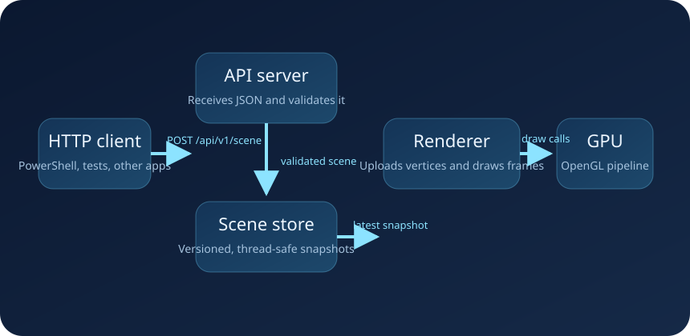

High-level flow

Why one process and two main execution paths?
The renderer must own the graphics context on the main thread. The HTTP server blocks while it listens for requests. Those two needs would fight each other if they ran on the same thread, so Halcyn starts the API server on a background thread and keeps rendering on the main thread.
Layer responsibilities
src/domain
Defines the scene language and validation rules.
src/core
Owns synchronization and versioned scene snapshots.
src/api
Owns HTTP transport and response handling.
src/renderer
Owns OpenGL, shaders, buffers, matrices, and draw calls.
Why immutable scene snapshots?
The API thread and the render thread should not share a mutable scene object that one thread edits while the other thread reads. Instead, Halcyn replaces the entire current scene snapshot with a new one when a request succeeds. The renderer then picks up the new snapshot on a later frame.
Why normalize both 2D and 3D into one render format?
The GPU upload path becomes easier to understand if it always sees one flat vertex format:
position plus color. A 2D vertex becomes a 3D vertex with z = 0. A 3D vertex already has all
three position coordinates.